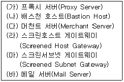
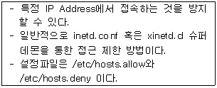

네트워크관리사-1급 (2014-04-06 기출문제)
1과목: TCP/IP
1. 10.0.0.0/8 인 네트워크에서 115개의 서브넷을 만들기 위해 필요한 서브넷 마스크는?
- 255.0.0.0
- 255.128.0.0
- 255.224.0.0
- 255.254.0.0
(정답률: 58%)

2. IGMP에서 IP 그룹동보통신에 대한 설명 중 옳지 않은 것은?
- IP 호스트는 IP 그룹동보통신에 동적으로 언제든지 참여하거나 나갈 수 있다.
- IP 그룹동보통신의 주소는 시작지의 주소만 있지 목적지의 주소는 나타나지 않는다.
- 224.0.0.1은 예약된 주소로 그룹의 모든 호스트를 의미한다.
- 모든 그룹동보통신에서의 주소는 D Class의 IP Address에 기반을 두고 있다.
(정답률: 70%)
3. SMTP에 대한 설명 중 옳지 않은 것은?
- 두 호스트 간 메시지 전송을 제공한다.
- 네트워크의 구성원에 패킷을 보내기 위한 하드웨어 주소를 정한다.
- 전송에 대해 TCP를 사용한다.
- 인터넷상에서 전자우편(E-Mail)의 전송을 규정한다.
(정답률: 67%)
4. UDP에 대한 설명 중 옳지 않은 것은?
- 가상선로 개념이 없는 비연결형 프로토콜이다.
- TCP보다 전송속도가 느리다.
- 각 사용자는 16비트의 포트번호를 할당받는다.
- 데이터전송이 블록 단위이다.
(정답률: 79%)
5. TCP/IP 계층과 OSI 7 Layer를 비교한 내용 중 옳지 않은 것은?
- TCP 프로토콜은 OSI 7 Layer의 전송계층에 해당한다.
- IP 프로토콜은 OSI 7 Layer의 네트워크계층에 해당한다.
- FTP는 OSI 7 Layer의 응용계층에 해당한다.
- HTTP 프로토콜은 OSI 7 Layer의 표현계층에 해당한다.
(정답률: 66%)
6. ARP에 대한 설명 중 올바른 것은?
- TCP/IP 프로토콜에서 데이터의 전송 서비스를 규정한다.
- TCP/IP 프로토콜의 IP에서 접속 없이 데이터의 전송을 수행하는 기능을 규정한다.
- 네트워크의 구성원에 패킷을 보내기 위하여 IP Address를 하드웨어 주소로 변경한다.
- 인터넷상에서 전자우편(E-Mail)의 전송을 규정한다.
(정답률: 72%)
7. DNS에 관한 설명으로 옳지 않은 것은?
- DNS는 최상위에 루트 노드를 갖는 계층구조의 트리 형태를 갖추고 있으며 최대 128 개의 계층(level)을 가질 수 있다.
- DNS에서 1차 서버 (Primary Server)는 자신의 권역(Zone)에 대한 정보의 생성, 관리, 업데이트를 맡고 있다.
- DNS 메시지에는 모두 쿼리(Query)와 응답(Response)의 두 가지 종류가 있다.
- DNS에서는 하위 계층 프로토콜로써 UDP만 사용한다.
(정답률: 71%)
8. TCP 환경에서는 여러 가지 프로토콜을 지원한다. 각 프로토콜에 대해 기본적으로 지정되어 사용되고 있는 포트번호로 옳지 않은 것은?
- NNTP : 90
- TFTP : 69
- SMTP : 25
- FTP : 21
(정답률: 66%)
9. TCP/IP 망을 기반으로 하는 다양한 호스트간 네트워크 상태 정보를 전달하여 네트워크를 관리하는 표준 프로토콜은?
- FTP
- ICMP
- SNMP
- SMTP
(정답률: 65%)
10. IPv4 헤더내 필드의 내용 중 해당 패킷이 분할된 조각 중의 하나임을 알 수 있게 하는 것은?
- 'Identification' 필드 = 1000
- 'Do Not Fragment' 비트 = 0
- 'More Fragment' 비트 = 0
- 'Fragment Offset' 필드 = 1000
(정답률: 53%)
11. Windows 2003 Server에서 TCP/IP 설정시 지정해야 할 구성요소로 옳지 않은 것은?
- DNS
- Gateway
- 연결대상 컴퓨터이름
- IP Address
(정답률: 72%)
12. TCP 세션의 성립에 대한 설명으로 옳지 않은 것은?
- 세션 성립은 TCP Three-Way Handshake 응답 확인 방식이라 한다.
- 실제 순서번호는 송신 호스트에서 임의로 선택된다.
- 세션 성립을 원하는 컴퓨터가 ACK 플래그를 '0'으로 설정하는 TCP 패킷을 보낸다.
- 송신 호스트는 데이터가 성공적으로 수신된 것을 확인하기까지는 복사본을 유지한다.
(정답률: 69%)
13. B Class '128.10.0.0' 주소를 갖는 곳에서 Host 수 150개, 물리적인 망 100개를 구성할 경우 잘못된 것은?
- 물리적인 망 구조를 고려할 필요 없이 host ID 부분에 1~150까지 주소를 할당한다.
- 물리적인 망 100개가 구성되므로 라우터도 100대가 필요하고 이에 대해 개별적인 host주소를 지정하여 관리한다.
- 150개 호스트 사이에 있는 모든 라우터는 각 호스트가 존재하는 위치를 알아야 한다.
- 새로운 호스트가 추가되면 라우터의 라우팅 정보를 갱신해야 한다.
(정답률: 54%)
14. IPv6에 대한 설명으로 옳지 않은 것은?
- IPv6는 IPng(Next Generation IP)로 개발된 버전 중의 하나이다.
- IPv6는 일련의 IETF 공식 규격이다.
- IPv6는 IP Address의 길이가 256bit이다.
- IPv4에 비해 주소 길이가 증가하고 보안, 실시간 전송, 흐름 제어 등이 고려되었다.
(정답률: 82%)
15. IP Address가 '165.132.10.21'일 때 해당 Class와 사설 IP 대역을 바르게 짝지은 것은?(단, 서브넷 마스크는 Class에 맞는 기본 서브넷 마스크를 사용한다.)
- B Class , 사설 IP 대역 : 172.16.0.0 ~ 172.31.255.255
- B Class , 사설 IP 대역 : 162.32.0.0 ~ 162.192.255.255
- A Class , 사설 IP 대역 : 10.0.0.0 ~ 10.255.255.255
- C Class , 사설 IP 대역 : 192.168.0.0 ~ 192.168.255.255
(정답률: 65%)
16. IPv6 헤더 형식에서 네트워크 내에서 혼잡 상황이 발생되어 데이터그램을 버려야 하는 경우 참조되는 필드는?
- Version
- Priority
- Next Header
- Hop Limit
(정답률: 57%)
2과목: 네트워크 일반
17. 브로드캐스트(Broadcast)에 대한 설명 중 올바른 것은?
- 어떤 특정 네트워크에 속한 모든 노드에 대하여 데이터 수신을 지시할 때 사용한다.
- 단일 호스트에 할당이 가능하다.
- 서브네트워크로 분할할 때 이용된다.
- 호스트의 Bit가 전부 '0'일 경우이다.
(정답률: 80%)
18. 비동기 데이터(Asynchronous Data) 전송에 필요한 신호는?
- 처음과 마지막 자료(start/stop)
- 인터럽트(Interrupt)
- 상태자료(Status)
- 캐리(Carry)
(정답률: 77%)
19. 광섬유의 종류에 해당되지 않은 것은?
- 스텝 인덱스(Step Index)
- 그레이드 인덱스(Graded Index)
- 단일모드(Single Mode)
- 복합모드(Complex Mode)
(정답률: 39%)
20. 디지털 변조로 옳지 않은 것은?
- ASK
- FSK
- PM
- QAM
(정답률: 65%)
21. 주파수 분할 다중화 기법을 이용해 하나의 전송매체에 여러 개의 데이터 채널을 제공하는 전송방식은?
- 브로드밴드 전송방식
- 내로우밴드 전송방식
- 베이스밴드 전송방식
- 하이퍼밴드 전송방식
(정답률: 74%)
22. OSI 7 Layer에 Protocol을 연결한 것 중 옳지 않은 것은?
- Application : FTP, SNMP, Telnet
- Transport : TCP, SPX, UDP
- DataLink : NetBIOS, NetBEUI
- Network : ARP, DDP, IPX, IP
(정답률: 57%)
23. 패킷 교환 방식의 단점이 아닌 것은?
- 선로 장애 시 복구가 어렵다
- 교환을 위한 소프트웨어 및 하드웨어가 복잡하다
- 큐잉 지연이 존재한다
- 각 패킷마다 주소를 위한 오버헤드가 존재한다
(정답률: 38%)
24. OSI 7 계층 모델의 3계층 네트워크 기능인 경로설정과 스위칭을 수행하는 것은?
- 라우터
- 브리지
- 리피터
- 게이트웨이
(정답률: 68%)
25. 성형 토폴로지의 특징으로 옳지 않은 것은?
- 중앙 제어 노드가 통신상의 모든 제어를 관리한다.
- 설치가 용이하나 비용이 많이 든다.
- 중앙 제어노드 작동불능 시 전체 네트워크가 정지한다.
- 모든 장치를 직접 쌍으로 연결할 수 있다.
(정답률: 64%)
26. 무선 랜의 구성 방식 중 무선 랜카드를 가진 컴퓨터간의 네트워크를 구성하여 작동하는 방식은?
- Infrastructure 방식
- AD Hoc 방식
- AP 방식
- CDMA 방식
(정답률: 56%)
27. OSI 7 계층 중 비트를 데이터 프레임으로 전환하며, 순환 잉여 검사(CRC)를 수행하는 계층은?
- 트랜스포트 계층
- 네트워크 계층
- 데이터링크 계층
- 물리적 계층
(정답률: 73%)
3과목: NOS
28. Windows 2003 Server에서 프린터를 추가하고 공유하기 위해 사용할 수 없는 계정은?
- Administrator
- Server Operator
- Printer Operator
- Replicator
(정답률: 69%)
29. 자신의 Linux 서버에 네임서버 운영을 위한 BIND Package가 설치되어 있는지를 확인해 보기 위한 명령어는?
- #rpm -qa l grep bind
- #rpm -ap l grep bind
- #rpm -qe l grep bind
- #rpm -ql l grep bind
(정답률: 65%)
30. Windows 2003 Server의 공유 폴더에 대한 설명으로 옳지 않은 것은?
- 공유 폴더의 권한은 각각의 파일이 아니라 공유 폴더 전체에만 적용 될 수 있다.
- 공유 폴더란 시스템 사용자가 네트워크의 다른 사용자가 접근 할 수 있도록 권한을 부여한 폴더를 의미한다.
- 기본 공유 폴더의 권한은 '모든 권한'이며, 폴더를 공유할 때 'Users' 그룹에 할당 된다.
- Admin$는 기본적으로 공유되어 있는 폴더로 운영체제의 기본 폴더이며 관리자 그룹만 접근 할 수 있다.
(정답률: 34%)
31. DNS의 Zone 파일 내용에 포함되지 않은 것은?
- Serial
- Refresh
- Retry
- Nslookup
(정답률: 75%)
32. DNS가 URL 'icqa.or.kr'을 IP Address '211.111.144.240'으로 서비스하고 있을 때 DNS 설정 항목을 수정하여 'test.icqa.or.kr'로 외부에 서비스할 수 있는 가장 적절한 방법은?
- DNS MX 레코드를 추가한다.
- DNS A 레코드를 추가한다.
- DNS REVERSE 영역을 추가한다.
- 서비스 할 수 없다.
(정답률: 65%)
33. Linux에서 'ifconfig'를 사용하여 네트워크 인터페이스 카드를 동작시키려고 한다. 명령어에 대한 사용이 올바른 것은?
- ifconfig 192.168.2.4 down
- ifconfig eth0 192.168.2.4 up
- ifconfig -up eth0 192.168.2.4
- ifconfig up eth0 192.168.2.4
(정답률: 70%)
34. Windows 2003 Server에서 www.icqa.or.kr의 IP Address를 얻기 위한 콘솔 명령어는?
- ipconfig www.icqa.or.kr
- netstat www.icqa.or.kr
- find www.icqa.or.kr
- nslookup www.icqa.or.kr
(정답률: 75%)
35. Linux에서 주어진 명령어의 도움말(매뉴얼)을 출력하기 위해 사용되는 명령어는?
- ps
- fine
- man
- ls
(정답률: 69%)
36. Windows 2003 Server의 그룹 정책을 사용하면 컴퓨터 관리자에 상당한 편리성을 제공하는데, 그룹 정책에 대한 설명으로 옳지 않은 것은?
- 보안의 문제로 인해 시스템에서 제공되는 기본 그룹은 존재치 않으며 사용자가 직접 만들어 사용한다.
- 로컬 그룹은 도메인 컨트롤러가 아닌 컴퓨터에서 만들 수 있는 그룹이다.
- 도메인 로컬 그룹은 로컬 도메인과 함께 다른 도메인의 사용자도 가입할 수 있다.
- 글로벌 그룹은 로컬 도메인의 사용자만 가입할 수 있다.
(정답률: 38%)
37. Linux의 'vi' 명령어 중 변경된 내용을 저장한 후 종료하고자 할 때 사용해야 할 명령어는?
- :wq
- :q!
- :e!
- $
(정답률: 75%)
38. Windows 2003 Server에서 감사정책을 설정하고 기록을 남길 수 있는 그룹은?
- Administrators
- Security Operators
- Backup Operators
- Audit Operators
(정답률: 59%)
39. Windows 2003 Server의 Active Directory를 사용할 때 도메인 컨트롤러(서버) 사이에서 복제되는 디렉터리 데이터의 범주에 속하지 않는 것은?
- Domain Data
- Configuration Data
- Schema Data
- User Data
(정답률: 36%)
40. Linux에서 사용되는 어플리케이션 및 환경 설정에 필요한 설정 파일들과 'passwd' 파일을 포함하고 있는 디렉터리는?
- /bin
- /home
- /etc
- /root
(정답률: 70%)
41. 네트워크 어댑터가 자신에게 오는 패킷뿐만 아니라 네트워크를 통과하는 모든 패킷을 받아들이는 네트워크 설정 모드는?
- Promiscuous 모드
- Quick 모드
- Standard 모드
- Thorough 모드
(정답률: 67%)
42. ‘test.txt’라는 파일에 대해 소유자에게는 읽기, 쓰기, 실행 권한을 부여하고 소유그룹에는 읽기와 실행 권한을 부여하고 타인에게는 아무 권한도 부여하지 않을 때 올바른 명령은?
- chmod 450 test.txt
- chmod 750 test.txt
- chmod 457 test.txt
- chmod 470 test.txt
(정답률: 80%)
43. 삼바(Samba)에 관한 설명 중 옳지 않은 것은?
- Linux와 이기종간의 파일 시스템이나 프린터를 공유하기 위해 설치하는 서버 및 클라이언트 프로그램이다.
- 삼바에 대한 정보와 다운로드는 'http://www.samba.org'에서 얻을 수 있다.
- 삼바의 실행은 '$/etc/rc.d/smb start' 로 한다.
- 삼바의 종료는 '$/etc/rc.d/smb exit' 로 한다.
(정답률: 54%)
44. Windows 2003 Server의 이벤트 표시기 관리 도구에서 보여주는 이벤트의 형식으로 옳지 않은 것은?
- 정보(시스템의 일반적 상황 메시지)
- 시스템 구성요소에 대한 경고
- 시스템 구성요소의 오류
- 시스템 장치간의 충돌과 새 하드웨어 추가 메시지
(정답률: 55%)
45. Windows 2003 Server의 IIS(인터넷 정보 서비스)에서 작업할 수 있는 서비스로 옳지 않은 것은?
- FTP
- DHCP
- NNTP
- SMTP
(정답률: 33%)
4과목: 네트워크 운용기기
46. Cisco Router에서는 환경설정을 위한 여러가지 모드를 제공하는데, 모드 프롬프트 중 옳지 않은 것은?
- User Mode: Router>
- Global Mode: Router#
- Interface Mode: Router(config-if)#
- Router Mode: Router(config-router)#
(정답률: 54%)
47. RAID에 대한 설명이 옳지 않은 것은?
- RAID level 2 : 어레이 안의 모든 드라이브에 비트 수준으로 자료 나누기를 제공한다. 추가 드라이브는 해밍 코드를 저장한다. 미러된 드라이브는 필요없다.
- RAID level 3 : 기본적으로 RAID 1+2이다. 이는 다수의 RAID 1 한 쌍에 걸쳐 적용된 것이다. 패리티 정보는 생성되고 단일 패리티 디스크에 작성된다.
- RAID level 4 : 데이터가 비트나 바이트보다는 디스크 섹터 단위로 나뉘어 지는 것만 제외하면 RAID level 3과 비슷하다. 패리티 정보도 생성된다.
- RAID level 5 : 데이터는 드라이브 어레이의 모든 드라이브에 디스크 섹터 단위로 작성된다. 에러-수정 코드도 모든 드라이브에 작성된다.
(정답률: 53%)
48. 다음 중 라우티드(Routed) 프로토콜은?
- RIP
- TCP/IP
- OSPF
- IGRP
(정답률: 65%)
49. 스위치의 방식 중 Store and Forward 스위칭 방식에 대한 올바른 설명은?
- 스위치가 프레임을 완전히 수신한 후 포워딩한다.
- 프레임의 길이에 상관 없이 레이턴시(Latency)가 일정하다.
- 스위치가 목적지 주소를 보자마자 전송을 시작하는 방식이다.
- 일반적으로 Cut Through 방식에 비해 빠르다.
(정답률: 78%)
50. 두 개 이상의 동일한 LAN 사이를 연결하여 네트워크 범위를 확장하고, 스테이션 간의 거리를 확장해 주는 네트워크 장치는?
- Repeater
- Bridge
- Router
- Gateway
(정답률: 64%)
5과목: 정보보호개론
51. 분산 환경에서 클라이언트와 서버 간에 상호 인증기능을 제공하며 DES 암호화 기반의 제3자 인증 프로토콜은?
- Kerberos
- Digital Signature
- PGP
- Firewall
(정답률: 57%)
52. 보안 서비스에 대한 설명 중 내용이 옳지 않은 것은?
- 인증(Authentication) - 사용자의 신분 혹은 객체의 내용 등이 타당성을 확인함
- 무결성(Integrity) - 정보 시스템이나 네트워크 자원에 대한 손실이나 축소를 방지함
- 부인 봉쇄(Non-Repudiation) - 송신자나 수신자가 전송된 메시지를 부인하지 못하도록 함
- 기밀성(Confidentiality) - 허락 되지 않은 사용자 또는 객체가 정보의 내용을 알 수 없도록 하는 것
(정답률: 57%)
53. 방화벽 시스템만으로 구성된 것은?

- (가), (나), (다)
- (나), (라), (마)
- (가), (다), (바)
- (라), (마), (바)
(정답률: 46%)
54. 암호 방식 중 블록 암호화 방법에 해당하는 것은?
- A5/1
- AES
- RC4
- SEAL
(정답률: 65%)
55. Linux 시스템에서 아래 내용이 설명하는 것은?

- TCP_Wrapper
- PAM
- SATAN
- ISSm
(정답률: 65%)
56. LINUX 시스템에서 패스워드의 유효 기간을 정하는데 사용될 수 없는 방법은?
- ‘/etc/login.defs’ 의 설정을 사용자 account 생성 시 지정
- chown 명령을 활용하여 지정
- ‘/etc/default/useradd’ 파일의 설정을 account 생성 시 지정
- change 명령을 활용하여 지정
(정답률: 53%)
57. Linux 커널에서 기본으로 제공하는 넷필터(Net Filter)를 이용하여 방화벽을 구성할 수 있는 패킷 제어 프로그램은?
- iptables
- nmap
- fcheck
- chkrootkit
(정답률: 57%)
58. 침입방지시스템을 비정상적인 침입탐지 기법과 오용침입탐지 기법으로 구분할 때 비정상적인 침입탐지 기법으로 옳지 않은 것은?
- 상태 전이 분석(State Transition Analysis)
- 통계적인 방법(Statistical Approach)
- 예측 가능한 패턴 생성(Predictive Pattern Generation)
- 행위 측정 방식들의 결합(Anomaly Measures)
(정답률: 32%)
59. 전자우편 보안기술 중 PEM(Privacy-enhanced Electronic Mail)에 대한 설명으로 옳지 않은 것은?
- MIME(Multipurpose Internet Mail Extension)를 확장해서 전자 우편 본체에 대한 암호 처리와 전자 우편에 첨부하는 전자 서명을 제공한다.
- 프라이버시 향상 이메일이라는 뜻으로, 인터넷에서 사용되는 이메일 보안이다.
- 보안 능력이 우수하고, 중앙집중식 인증 체계로 구현된다.
- 비밀성, 메시지 무결성, 사용자 인증, 발신자 부인 방지, 수신자 부인 방지, 메시지 반복 공격 방지 등의 기능을 지원한다.
(정답률: 52%)
60. SSL에 대한 설명으로 올바른 것은?
- TCP 계층과 IP 계층의 사이에 위치한다.
- 크게 3 단계로 나눌 수 있는 핸드 쉐이킹을 수행한다.
- 수행 결과 안전한 공개키가 생성된다.
- 서버와 클라이언트 각각 인증서가 필요하다.
(정답률: 62%)